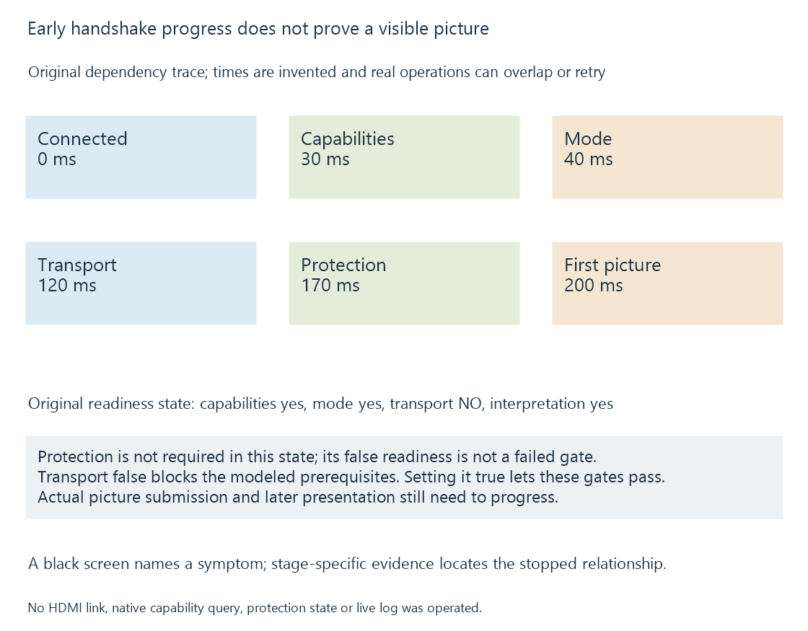

HDMI handshakes and black screens
HDMI establishment involves capability exchange, a compatible output choice, transport progress and any required signaling/protection relationships whose failures can produce similar visible symptoms.
A black screen describes what the viewer sees, not which operation failed. The player may be unable to obtain capabilities, establish its selected transport, satisfy an output policy or deliver a correctly interpreted picture.
“HDMI handshake” is often used for this whole establishment process. It is more useful to separate the relationships inside it.
Connected, configured and carrying pictures are different states
A source can detect a connected sink before it has selected a working mode. It can read EDID before its selected high-rate transport succeeds. A trained link can still need correct interpretation or protection handling.
| Observation | What it supports |
|---|---|
| Connected-device indication | A relevant connection/detection state |
| EDID data read | Capability information was obtained |
| Compatible mode selected | The source chose a declared/implemented output |
| Transport becomes ready | Relevant link-establishment progress |
| Protected-output requirement satisfied | The applicable authentication/policy stage progressed |
| Sink recognizes current signal | Input recognized timing/interpretation |
| Visible picture advances | Later presentation progress |
These are useful stages of evidence. They need not appear in every platform’s log, and no single row proves every later row.
A startup mode change can create a temporary gap
An Emby app can begin playback in a different rate or HDR state from its interface. The local output then has to establish the selected presentation.
During that transition, the display may temporarily have no usable current picture. A short blackout that occurs once at the output change is a different observation from periodic blackouts during an otherwise stable mode.
Frame-rate matching explains the rate choice. QMS covers a narrower supported same-resolution rate-switch case rather than every possible transition.
An original dependency trace
Consider a teaching model in which the route needs readable capabilities, a chosen mode, usable transport and successful required protection before its first protected picture is shown.
| Model event | Declared time |
|---|---|
| Connection detected | 0 ms |
| Capability read completed | 30 ms |
| Compatible mode chosen | 40 ms |
| Transport ready | 120 ms |
| Required protection ready | 170 ms |
| First intended picture visible | 200 ms |

The 200-ms duration is invented. The table is not a universal HDMI ordering rule or a benchmark: real operations can overlap, retry or have different dependencies.
The model’s visibility condition is an intersection of required states. If capability reading succeeds at 30 ms but transport never becomes ready, the first condition is true and the complete route is still incomplete.
If protection is not required by the actual content/output policy, that particular gate is absent. The model should follow the real policy rather than assume every movie uses the same gate.
An absent requirement is different from a failed requirement
Use this original readable state object:
{
"capabilitiesReady": true,
"modeSelected": true,
"transportReady": false,
"signalInterpretationReady": true,
"protectionRequired": false,
"protectionReady": false
}
It is a teaching state, not a native HDMI report or Emby log. Its simplified prerequisite condition is:
capabilitiesReady AND modeSelected AND transportReady
AND signalInterpretationReady
AND (NOT protectionRequired OR protectionReady)
The condition fails because transport is not ready. Protection being false is not another failure in this case, because that requirement is absent.
If transport becomes ready while the other declared states remain unchanged, all modeled prerequisites pass. Actual picture submission and later presentation must then progress too; the prerequisite result is not a captured visible frame.
Separating an unused stage from an unsuccessful required stage prevents an irrelevant status from becoming the diagnosis.
Mode changes alter more than one request
“4K” does not specify the complete signal. Refresh rate, pixel clock/timing totals, precision, chroma, HDR interpretation and DSC can change its requirements.
A route that carries an eight-bit SDR mode can fail a higher-rate ten-bit request. A receiver can preserve ordinary video but constrain the required HDR or protected-output relationship.
HDMI bandwidth develops the transport request. AV receivers develops the additional input/output boundaries.
The correct comparison records the actual mode on both sides, not just the movie’s resolution.
A controlled comparison changes one relevant boundary
Use an original comparison matrix:
| Case | Preserved context | Deliberate change |
|---|---|---|
| A | Player, source, output request and TV input | Baseline indirect receiver route |
| B | Same source/player/output request | Direct player-to-TV route |
| C | Baseline topology and source | Lower declared output rate/precision |
| D | Baseline source/topology/output mode | Another known cable path |
If B works while A fails, the added intermediate route is relevant. That observation still includes the receiver’s ports, second cable and capability handling; it does not isolate one component yet.
If C works while A fails, the request matters. It may have changed electrical rate, format or another interpretation, so identify exactly which property changed.
If D differs, the installed transport path is relevant under the preserved mode. A cable result at a lower mode should not be reported as a test of the higher one.
These are diagnostic relationships, not instructions to change a user’s system without context.
Audio and video can advance through different paths
A receiver may extract upstream audio while downstream picture transport or interpretation is failing. A TV can also recognize a connected device without displaying its intended picture.
Audio continuing is therefore useful evidence that some work progressed. It does not prove that the picture signal reached the final display correctly.
Likewise, the server showing Direct Play establishes original-media delivery, not the later HDMI link’s state.
For Emby playback, separate server/client progress, the chosen local output and the final sink’s observations. A network stall prevents new programme data from reaching presentation; a display-link blackout can occur while that data is already available.
Repeated interruptions need their own timing context
Record whether the event follows a rate/HDR/input change, occurs at a regular interval or appears unpredictably while the mode stays stable.
A reported new mode at every interruption suggests a different relationship from a stable-mode link that repeatedly loses progress. Application, receiver and display evidence should be aligned to the same event.
The useful report contains source/client context, exact topology, before/after output modes and the first stage known to have stopped progressing. That gives the black screen a location in the route instead of treating its appearance as a diagnosis.
See Also
- EDID: display capability declarations
- HDCP and protected display links
- HDMI HDR signaling
- AV receivers in the video path
- HDMI link bandwidth: TMDS and FRL
- Quick Media Switching (QMS)